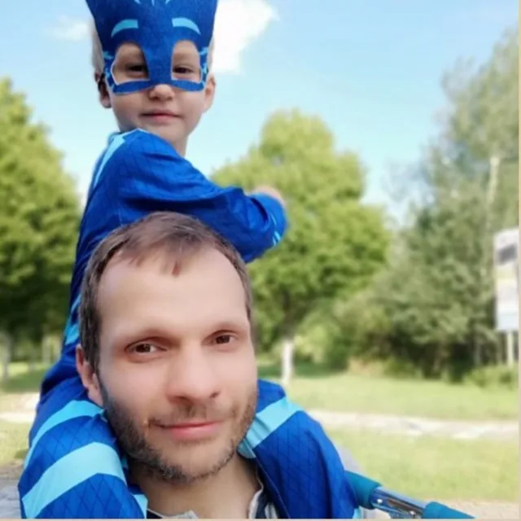
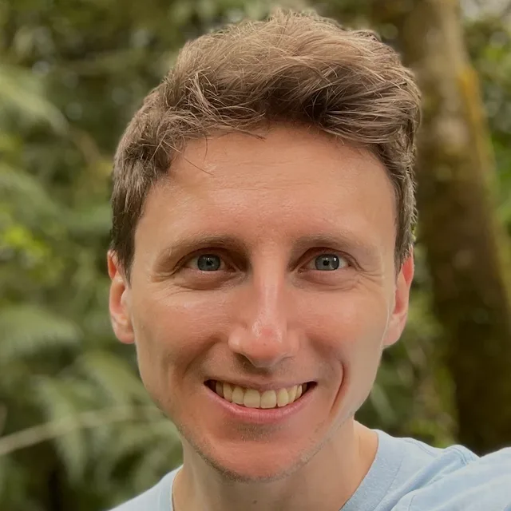
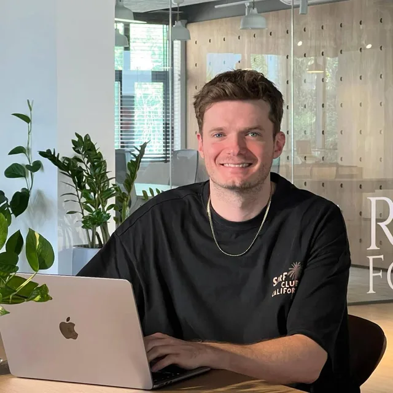

About us · A research group within LAION
Different backgrounds.
A shared curiosity about people.
Humaneness Labs is a research group within LAION. It brings together Christoph Schuhmann and Robert Kaczmarczyk — an educator and a physician, both co-founders of LAION — and AI researcher Gijs Wijngaard, working on the behavior layer for AI.

Christoph Schuhmann
Education · Open AI research
Christoph is an educator, researcher, and co-founder of LAION, with a background in physics, computer science, psychology, and the performing arts. He studied psychology, physics, and computer science at the University of Vienna, alongside Method Acting at the Actors Workshop Vienna, where he trained in approaches developed by Eric Morris and Lee Strasberg.
At LAION, he has helped build an international community around open datasets, models, and collaborative AI research. His experience across education, psychology, and acting informs a distinctly human perspective on AI: a curiosity about how people learn, sustain attention, express emotion, and relate to one another — and what these processes might teach us about building more capable and human-centered AI systems.
His work and LAION’s projects have received international attention, with coverage and interviews in outlets including Bloomberg, Forbes, The Washington Post, and other major media.

Robert Kaczmarczyk
Medicine · Open AI research
Robert is a physician, AI researcher, and co-founder of LAION. He has been a board-certified dermatologist since March 2026. His experience spans medicine, research, and the practical work of building an open research community.
He brings broad expertise in the assessment of large language models in clinical contexts and in epidemiology, connecting the evaluation of AI systems with an understanding of clinical practice and population health.
He brings a clinical perspective to Humaneness Labs: an attention to context, uncertainty, and the subtle signals that shape communication between people.

Gijs Wijngaard
Machine listening · Open AI research
Gijs is an AI researcher exploring how machines listen, interpret sound, and connect what they hear to language. He holds a PhD from Maastricht University and works within LAION at Jülich Supercomputing Centre, following research at Microsoft Research.
His work brings together audio perception, semantic reasoning, and openly shared models and datasets, working on the foundation layer for exploring how AI can better understand the sounds and context of human interaction.
From open research to human interaction.
Humaneness Labs is a research group within LAION, the non-profit open AI research network. Our shared experience at LAION informs how we work: across disciplines, through collaboration, and with a belief that progress comes from making research accessible.
This work has earned international recognition. LAION-5B received a NeurIPS Outstanding Paper Award in 2022 in the Datasets and Benchmarks track. In 2023, LAION was named Falling Walls Science Breakthrough of the Year in Science & Innovation Management.
In 2024, LAION became an Intel AI/oneAPI Center of Excellence, advancing work on open, empathetic AI for personalized education.
At Humaneness Labs, we are exploring how attention, emotion, perception, and social context can shape AI behavior. We are starting with voice, where a pause, a change in rhythm, or a moment of hesitation can transform an interaction.